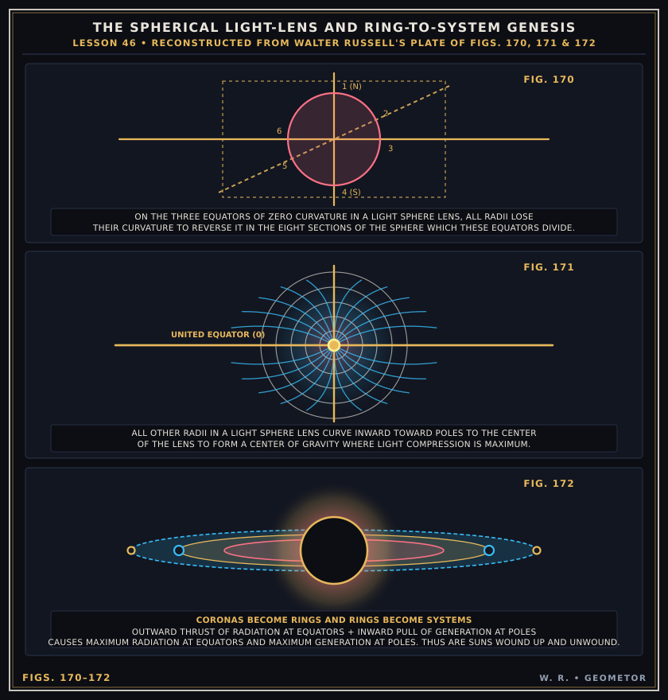

Chapter IV: Spherical Light-Lenses, Octant Curvature Reversal & Gravity¶
How Curved Radii Focus Light into Centers of Gravity and Unwind into Rings (Lesson 46)
In Lesson 46 (Figs. 170–172), Russell demonstrates that every spherical wave-field acts as an optical Light-Sphere Lens divided into eight sections by the three orthogonal equators of zero curvature:
Curvature Reversal across Zero Equators (`Fig. 170`): As light rays pass from one octant to the next across any of the three orthogonal zero-curvature equators, their curvature vanishes (\(\kappa = 0\)) at the plane of the equator and reverses concavity in the opposite octant.
Gravity as Focused Light Compression (`Fig. 171`): All non-equatorial radii curve inward toward the poles to focus at the center of the lens, creating a center of gravity where light compression and heat reach their maximum.
Coronas Become Rings and Rings Become Systems (`Fig. 172`): Maximum generation (inward winding) occurs at the poles, while maximum radiation (outward thrust) occurs along the united equator—casting off equatorial coronas that condense into nebulous rings and eventually into orbiting planets or electrons.
Interactive 3D Eight-Octant Light-Sphere Lens¶
Orbit the 3D optical lens below to trace how every field ray inflects cleanly across the 3 orthogonal zero-equators while polar compression winds inward and equatorial coronal rings expand outward:
Parametric 3D Geometry Exports:
Wavefront OBJ (light_lens.obj)
·
Scene JSON (light_lens.json)


Plate V (Figs. 170–172): GEOMETOR vector reconstruction of Walter Russell’s Light-Sphere Lens plate (Figs. 170, 171 & 172).¶
Archival Comparison (Fig_172_hires.png)¶
Compare the 3D optical model and reconstructed vector plate above with Walter Russell’s original white-on-black hand-lettered chalkboard plate from Unit 12, Page 44:

Archival Plate (Figs. 170–172): High-resolution (2481 × 3508) scan of Walter Russell’s original drawing signed W. R..¶